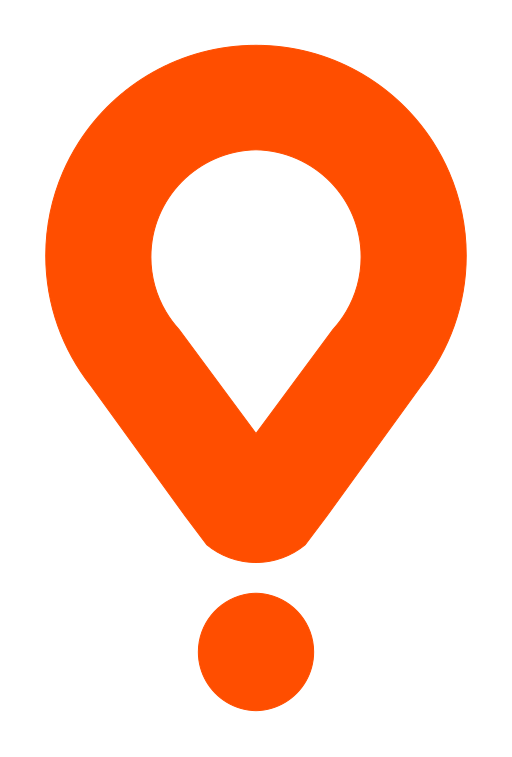

Glovo · confronto vettoriale
Quale dei due file Glovo usare nella sezione "Dove ordiniamo" di index.html. Deliveroo è mostrato solo come riferimento di peso visivo.


Originale = assets/glovo.svg, logo Glovo ufficiale integrale.
Variante = assets/glovo-circle-20.svg, stesso file con il cerchio in basso ingrandito del 20% e spostato di 11,75 unità per mantenere il distacco dal resto del glifo. Il pin sopra è ridotto al 90%: la scala è ancorata alla punta del pin (400; 584,49), quindi la punta resta ferma sul cerchio e il distacco fra pin e cerchio resta invariato.
Stato su index.html: oggi viene caricato solo assets/glovo.svg con height: 48px. La variante non è collegata da nessuna parte.
Confronto alle dimensioni reali del sito
Le tre icone stanno nella stessa casella 56x56 come nella pagina reale. La variante ha il viewBox identico all'originale, quindi l'ingrandimento del cerchio avviene dentro il file: a parità di altezza resta solo qualche pixel di differenza in larghezza.